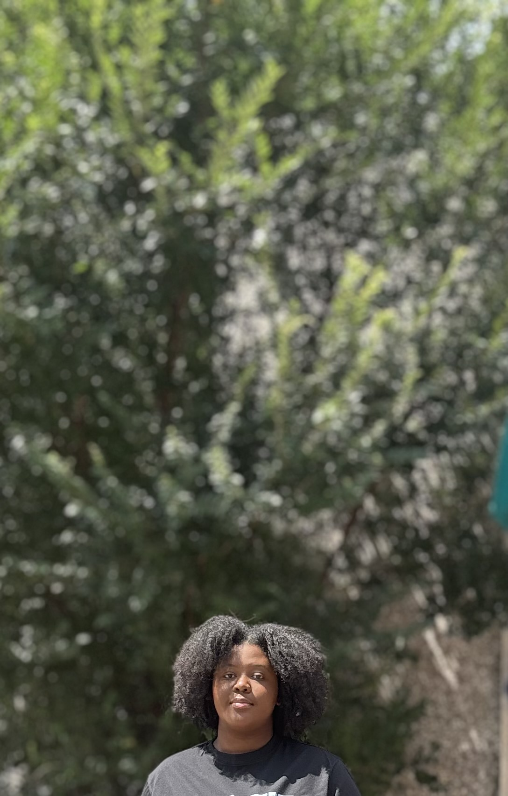

Statements
Meet the creator of Kinnly and dive into her mind to discover what design choices inspired the creation of Kinnly.
Design Statement
Kinnly was designed to be an interactive web guide with the purpose of creating community between likeminded people or those willing to step outside their comfort zone and discover others. The goal of the guide was to create organized information with an impactful yet calming vibe to ensure comfortability, as taking a step to connect with new groups can be overwhelming and cause fear from the unknown. The focus of Kinnly's audience was DFW residents, as the artist is a DFW local who struggled to navigate the transition to the area. By focusing on 3 major cities in the metroplex as the audience, Kinnly fosters inclusivity by connecting different corners of the metro area of Dallas.
The visual design palette utilizes warm tan accents with deep and light blue tones to relay comfort and trust. Tan relays belonging in the warmth of the tone, while blue relays comfortability, trust, and clarity. The color palette was inspired by the designer learning that people are most influenced by blue, amongst another color that was not utilized, so the goal of getting more users to explore more niche groups until they find "the one," is relayed through the hues of blue.
The use od card grids and rounded buttons was to communicate a website that prioritzies user-friendliness. The corners being rounded are fun, compared to sharp intimidating box buttons. The information is organized into grid rows in order to create ease in reading from left to right, while also organizing the display without preference or bias in the groups displayed. The content within allows for users to easily do their own research to understand their next niche in detail before commiting to the community.
Typography choices were made based on the ability to support readability, including the reading or visually impaired in design choices of accessibility. Roboto Slab creates clarity and emphasis in the headings, while PT Sans Narrow commits to clean displays in how narrow the lines are, also promoting readability.
The navigation and footer being without buttons is due to the understanding feeling of users being overwhelmed once a user sees too many options.
About Artist
Maziko is a early career UI/UX designer, with a passion for product designing. After moving to Richardson, Texas to pursue her bacherlors, she realized that the only way to survive college was by finding people who understood her, and creating a safe space for others to find those who understand them. When reflecting on her college experience, she realized a resource like Kinnly would have been the solution to her problems if she had this when transtioning from being a Houston native to a Dallas resident. Her transitioning, and time spent as a transfer peer mentor at the University of Texas, helped her understand there are others like her who can use a helping hand combatting isolation, homesickness, or lack of access. Each website is designed with intentionality, with equitable and accessible choices, to reflect her heart towards all users that utilize her websites and apps. Due to her time at The University of Texas at Dallas, she grew to understand that designing websites is more than just code and color, but about empathy and understanding.